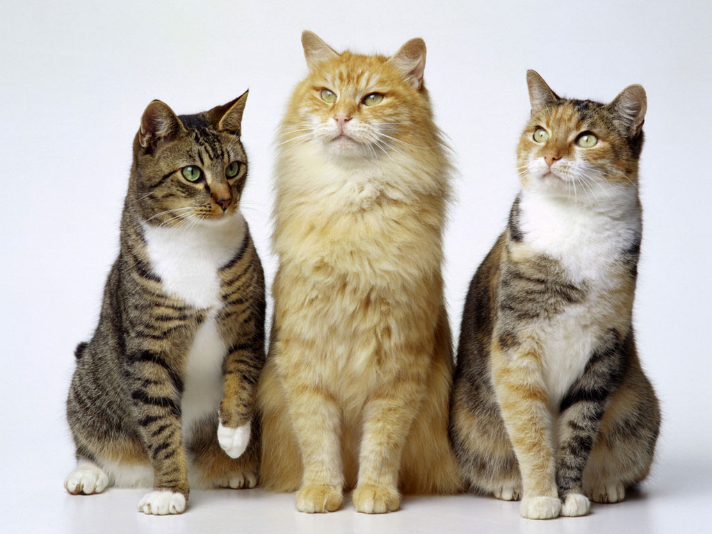

Mascotas

Diferencias entre perros y gatos:
7 diferencias entre perros y gatos explicadas con divertidos dibujos A unas personas les encantan los perros. A otras los gatos. A otras los dos. Pero lo que sí es seguro es que todos saben las diferencias entre tener un gato y un perro en casa. Se dice que el perro es el mejor amigo del hombre, que son protectores, cariñosos... En cambio los gatos son diferentes: independientes, limpios, en muchas ocasiones ariscos... Aunque también los hay cariñosos, ojo...
Comparativa | |
|---|---|
| Perros | Gatos |
|  | |
Características |
|
|
|
Nombres |
|
|
|